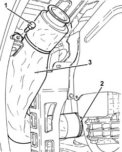
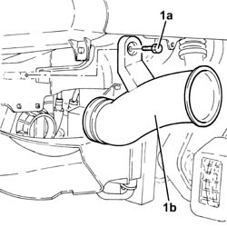
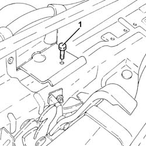
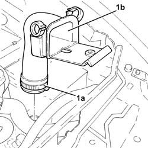

1048A23 COLD AIR INTAKE - R R
- Path
- Procedures > 10 ENGINE UNIT > 1048 ENGINE AIR SUPPLY CIRCUIT > 1048A VACUUM AIR CIRCUIT > 1048A23 COLD AIR INTAKE - R R
- Kind
- repair procedure (removal / refitting; the operation number is the code)
- Applies to
- all engines; all production periods
- Interactive page
- https://sloeber94.github.io/elrnDB-aGt/en/#/125001017
Applies to: engines: 2.0 JTS; all production periods
 Removing
Removing
 Refitting
RefittingPosition the vehicle on a lift.
Proceed with the removal
Op. 4450B02 LEFT FRONT WHEEL R R.
Proceed with the removal
Op. 7055B65 ENGINGE BAY DUSTGUARD PROTECTION IN LEFT FRONT WHEEL ARCH R R.
Proceed with the removal
Op. 7055B90 LEFT FRONT WHEEL ARCH LINER - R.R..
Proceed with the removal
Op. 7055B54 UNDER-ENGINE GUARD - R R.
1. Undo the bolt fixing the air filter cold air intake to the bodyshell.
2. Loosen the band fixing the cold air intake to the air filter.
3. Remove the cold air intake for the air filter.

Applies to: engines: 2.0 JTS; all production periods
Refitting
RemovingPlace the cold air intake for the air filter back in its housing and secure it using the band and the bolt.
Proceed with the refitting
Op. 7055B54 UNDER-ENGINE GUARD - R R.
Proceed with the refitting
Op. 7055B90 LEFT FRONT WHEEL ARCH LINER - R.R..
Proceed with the refitting
Op. 7055B65 ENGINGE BAY DUSTGUARD PROTECTION IN LEFT FRONT WHEEL ARCH R R.
Proceed with the refitting
Op. 4450B02 LEFT FRONT WHEEL R R.
Remove the vehicle from the lift.
Applies to: engines: 3.2 V6; all production periods
Removing
RefittingProceed with the removal
Op. 7055B54 UNDER-ENGINE GUARD - R R.
Proceed with the removal
Op. 7055B64 LH OR RH REFLECTOR(ONE) ON REAR BUMPERS - R R.
Proceed with the removal
Op. 7055B42 LH OR RH REFLECTOR(ONE) ON REAR BUMPERS - R R.
Proceed with the removal
Op. 7210E10 R.R. FRONT BUMPER.
1. Undo the bolt (1a) and remove the cold air intake for the air filter (1b) after having released it from the air filter.

Applies to: engines: 3.2 V6; all production periods
Refitting
RemovingPlace the cold air intake for the air filter back in its housing, connect it to the air filter and fasten it using the bolt.
Proceed with the refitting
Op. 7210E10 R.R. FRONT BUMPER.
Proceed with the refitting
Op. 7055B42 LH OR RH REFLECTOR(ONE) ON REAR BUMPERS - R R.
Proceed with the refitting
Op. 7055B64 LH OR RH REFLECTOR(ONE) ON REAR BUMPERS - R R.
Proceed with the refitting
Applies to: engines: 1.9 JTD 16V; all production periods
Removing
RefittingProceed with the removal - 1016A10 SOUND INSULATION COVER - R.R.
1. Undo the bolt fixing the cold air intake to the crossmember.

Applies to: engines: 1.9 JTD 16V; all production periods
1. Loosen the band (1a) and remove the cold air intake (1b).

Applies to: engines: 1.9 JTD 16V; all production periods
Refitting
RemovingPlace the cold airintake back in its housing and tighten the band.
Tighten the bolt fixing the cold air intake to the crossmember.
Proceed with the refitting - 1016A10 SOUND INSULATION COVER - R.R.
.
Applies to: engines: 1.8 T.SPARK; all production periods
Removing
Refitting- Position the vehicle on a lift.
- Op. 4450B02 LEFT FRONT WHEEL R R
- Op. 7055B65 ENGINGE BAY DUSTGUARD PROTECTION IN LEFT FRONT WHEEL ARCH R R
- Op. 7055B90 LEFT FRONT WHEEL ARCH LINER - R.R.
- Undo the bolt fixing the air filter cold air intake to the bodyshell.
- Loosen the band fixing the cold air intake to the air filter.
- Remove the cold air intake for the air filter.
Applies to: engines: 1.8 T.SPARK; all production periods
Refitting
Removing- Place the cold air intake for the air filter back in its housing and secure it using the band and the bolt.
- Op. 7055B90 LEFT FRONT WHEEL ARCH LINER - R.R.
- Op. 7055B65 ENGINGE BAY DUSTGUARD PROTECTION IN LEFT FRONT WHEEL ARCH R R
- Op. 4450B02 LEFT FRONT WHEEL R R
- Remove the vehicle from the lift.
Topics linked from this page (7)
- 4450B02 LEFT FRONT WHEEL R R
- 7055B42 LH OR RH REFLECTOR(ONE) ON REAR BUMPERS - R R
- 7055B54 UNDER-ENGINE GUARD - R R
- 7055B64 LH OR RH REFLECTOR(ONE) ON REAR BUMPERS - R R
- 7055B65 ENGINGE BAY DUSTGUARD PROTECTION IN LEFT FRONT WHEEL ARCH R R
- 7055B90 LEFT FRONT WHEEL ARCH LINER - R.R.
- 7210E10 R.R. FRONT BUMPER